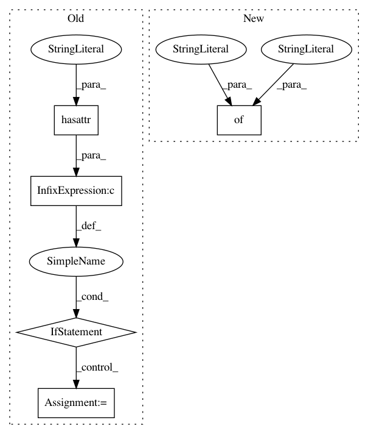

1336cdb14ff03de754aec6899794742ca91057b2,keras/engine/training_arrays.py,,fit_loop,#Any#Any#Any#Any#Any#Any#Any#Any#Any#Any#Any#Any#Any#Any#Any#,21
Before Change
// it"s possible to callback a different model than itself
// (used by Sequential models)
if hasattr(model, "callback_model") and model.callback_model:
callback_model = model.callback_model
else:
callback_model = model
callbacks.set_model(callback_model)
callbacks.set_params({
"batch_size": batch_size,
"epochs": epochs,
After Change
epoch_logs = {}
if steps_per_epoch is not None:
for step_index in range(steps_per_epoch):
batch_logs = {"batch": step_index, "size": 1}
callbacks._call_batch_hook("train", "begin", step_index, batch_logs)
outs = fit_function(fit_inputs)
outs = to_list(outs)
In pattern: SUPERPATTERN
Frequency: 4
Non-data size: 5
Instances
Project Name: keras-team/keras
Commit Name: 1336cdb14ff03de754aec6899794742ca91057b2
Time: 2019-01-09
Author: mkaze@users.noreply.github.com
File Name: keras/engine/training_arrays.py
Class Name:
Method Name: fit_loop
Project Name: chainer/chainercv
Commit Name: 8b084618a0ba7d0f79275c3e5578c85b4d6d8279
Time: 2017-05-26
Author: yuyuniitani@gmail.com
File Name: chainercv/links/loss/semantic_segmentation_loss.py
Class Name: PixelwiseSoftmaxClassifier
Method Name: __call__
Project Name: microsoft/nni
Commit Name: 2de52a8976971da4836727ba9242fedcc7474878
Time: 2020-01-16
Author: 656569648@qq.com
File Name: src/sdk/pynni/nni/compression/torch/compressor.py
Class Name: Pruner
Method Name: export_model
Project Name: keras-team/keras
Commit Name: 1336cdb14ff03de754aec6899794742ca91057b2
Time: 2019-01-09
Author: mkaze@users.noreply.github.com
File Name: keras/engine/training_generator.py
Class Name:
Method Name: fit_generator